What we took from seven apps
Each app is good at one thing. This is what fits a kitchen in service, and what does not. The council crossed out anything without a kitchen problem behind it.
| App | What it does well | In the book | Left out |
|---|---|---|---|
| Linear | The March 2026 refresh gave every page the same header and the same place for controls, and made navigation quieter so the work stands out. | One frame on every page: title, one bar for date and filters, the main action in the same place with the same words. | Dense rows, tiny text, keyboard-only flows. |
| Things 3 | Today apart from Upcoming. Details stay tucked away until you need them. | One line per job; the rarer actions behind a tap. Coming up for the next days. | Drag to place a new line (wet hands). |
| Airbnb | The reservation redesign (May 2026) puts dates, notes and alerts on one card for the booking. | A function on one card: when, guests, rounds, what is due, notes, print and cancel. | Photos and selling. |
| Todoist | Quick Add starts clean and shows details only once you type. | Your usual items first as one tap, filling every field the book knows. | Guessing from typed words. The book never guesses. |
| Flighty | Departure-board clarity: big times for what matters now, and the screen changes with the moment. | A now and next board: the next cut-off, the next round, your break, from what the phone already holds. | Maps and constant movement. |
| Duolingo | Every step answers at once, and progress is easy to see. | Section counts and a bar that fills as lines are ticked. | Streaks, points, stamps and animations: no value in service. |
| Headspace | A kind voice and plain words for unfamiliar things. | Words on actions instead of symbols (Urgent, not !), the same name for a thing on every page. | Onboarding cards and illustrations: no kitchen complaint behind them yet. |
Today
Measured in the click-test stand-in on a 390 x 844 phone at 14:00. A prep line is 108 to 134 px tall because On it, !, Recipe and ⋯ sit on a second row under every line, so a sous chef sees 2 prep lines above Add a line and a cook sees 3. An order line is 51 px. The date row, the section chips and the notebook heading take about 270 px before the first line.
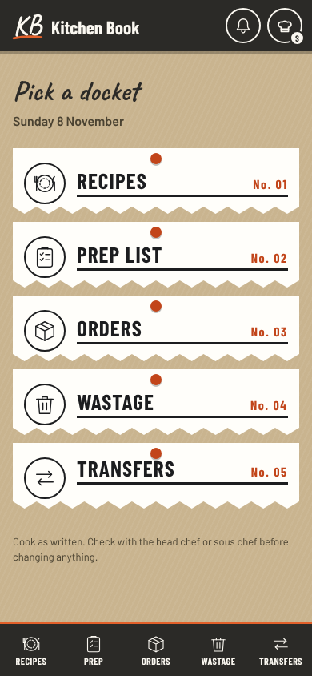
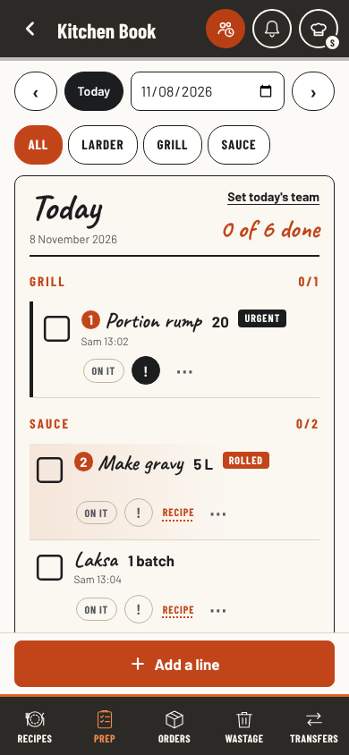
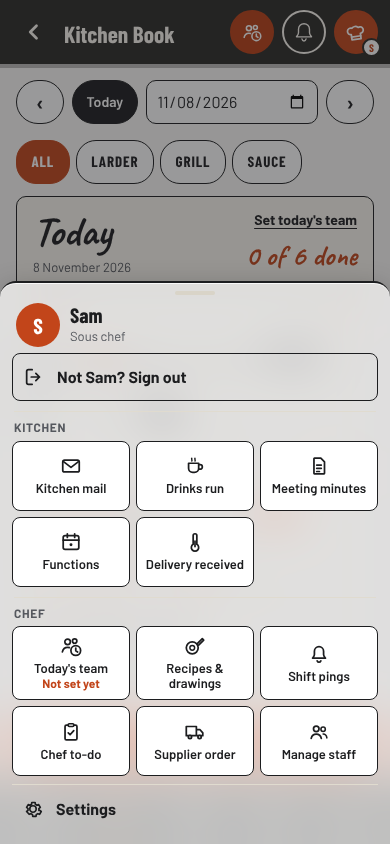
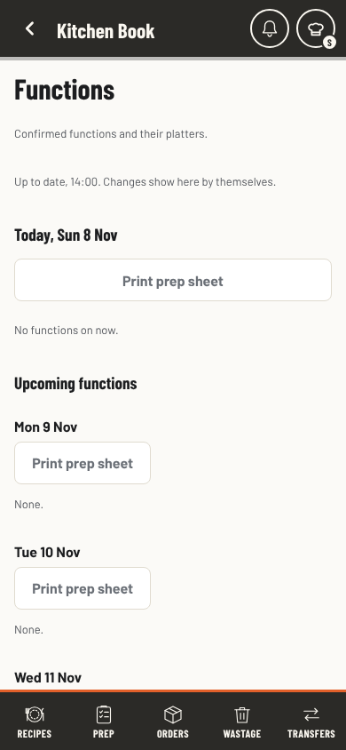
In all three designs
What round 1 agreed on. Each design builds on this, then goes its own way.
- One row for each prep line. Tick, words and amount, On it, and ⋯. Tick and On it stay one tap. Urgent, Change amount, Move section and Remove go behind ⋯ with words (2 taps). Recipe stays one tap: its own small button on lines with a recipe. Corrected after the coverage check: the words and the small line tick (since 5 Nov), so a Recipe link there would tick by mistake.
- One bar for the day and the sections. Back, the date and Forward sit in the same bar as the section chips.
- The main button in the same place, in words that name the job: Add a line, Add to the order, Log waste, Log a transfer. One name for one thing: Delivery received, never Delivery arrived. Urgent, never a lone !. Corrected after the coverage check: it first said Add a line on every list.
- The chef hat starts with today. Every day: Functions, Delivery received, Supplier order, Today's team. The rest after.
- Functions fold empty days into one line, with Print prep sheet only where there is a function.
- No new reads, listeners or rules. Nothing new moves on screen.
Side by side
Counted in these previews on a 390 x 844 phone with 14 prep lines in 5 sections. Today counted in the click-test stand-in.
Round 2: scores
Six fresh reviewers saw all three designs and today's screens, ranked them and scored each from 1 to 5. Every reviewer ranked A first.
| Reviewer | A Tidy rows | B Now and next | C Straight to work | What they would take into the best |
|---|---|---|---|---|
| Cook mid-service | 4 | 3 | 2 | C's print words: handwriting is slow at arm's length. A bigger Recipe target. |
| Head chef | 4 | 3 | 2 | B's function card, with Cancel away from the print buttons. A fade on the chip row. |
| Skeptic | 4 | 2 | 2 | Build A and nothing more. Print words only after a try on the line. Drop badges that need reads. |
| New starter | 4 | 3 | 2 | C's print words and plain-list hat; B's function alert, Cancel moved. |
| Keeper of the book | 4 | 2 | 2 | B's function card. Prove every hat badge in the read budget test or drop it. |
| Kitchen screen designer | 4 | 3 | 2 | B's function card, C's plain-list hat. 44 px for ⋯ and Recipe, a bigger URGENT tag. |
| Total | 24 | 16 | 12 |
What they agreed on
- C's open-in-place line is a mis-tick waiting to happen (five of six): a wet tap on the words pushes every row below it down, and nothing shows that the words open anything.
- Cancel function beside Prep sheet is one slip of a wet thumb away (four of six).
- B's board must never be wrong, and two of its lines (a delivery received, an order done by Sam) needed reads the home page does not make.
Corrected after round 2
- Lines that would need new reads are gone from the drawings: Meat in and 3 open on the hat, the delivery and the closed order on B's board. What is left comes from what the home page already reads.
- Guides is not new: it is the book's sixth tab whenever guides are turned on (
featOn('guides')). Today's stand-in had it off. - The board's small orange is
#F08A4Bon#2B2A27: 5.8 to 1, above AA's 4.5. The reviewer had assumed#E2602A. - The keeper noted the date box left the bar. In the mix, Today ▾ opens the calendar, so a set day is still two taps.
Every feature, checked
The head chef asked whether the redesign covers everything: orders, wastage, transfers, guides, shift pings, today's team, drinks, minutes, functions, delivery received, the admin panel, recipes and drawings, chef to-do, supplier order, manage staff and the rest. It did not, at first: the designs drew Prep, the chef hat, Functions and the home page, and left the rest unsaid. So every route, chef hat entry, admin room, sheet and band in the code was checked against each design. Nothing is removed in the recommended mix. Most pages do not change at all: they gain only a row in the hat list.
What the check changed
- Recipe on a prep line is its own small button. The words and the small line under them tick the line (since 5 Nov), so the Recipe link drawn there would have ticked by mistake. Open the recipe is in ⋯ as well.
- A prep line keeps everything it shows today: the Start here number, Urgent, Rolled, Waiting since or Usually by, Double up, Not sent, and who is on it in the box. The first drawings left these out.
- On the laptop every action stays in the line, as today, now in words. No ⋯ hides anything there.
- Words name the job: Add a line, Add to the order, Log waste, Log a transfer stay. Only Delivery arrived changes, to Delivery received.
- Print words, if chosen, go on every list line of Prep, Orders, Wastage, Transfers and the wall board, not Prep alone. Titles, counts and the empty notes stay handwritten.
- The function card is today's function sheet laid out again. It keeps every round with its tick, the kitchen comment, the changes, Print function and Change this function. Print prep sheet stays on each day.
- The hat list keeps your day under your name, My section for staff, Admin panel on the admin device, and the signed-out and functions-only versions.
- B and C missed more: both remove the dockets the seasonal celebrations draw on; B's board overlaps the function band, the cut-off reminder bar, the start of shift sheet, the wall board and the admin To do; C's tap on the words to open a line clashes with tapping the words to tick.
| Feature | Where | Recommended mix | If B or C were chosen | Tests that guard it |
|---|---|---|---|---|
| Home | #/: dockets, the functions card, celebrations, install card; signed out sees Recipes only | No change | B: the board replaces the dockets. C: no home; opens on your page, Recipes when signed out. Both lose the dockets the celebrations draw on | Signed-out view, celebrations on Home (phone-first, seasonal) |
| Recipes | #/recipes: Pass and Tiles, search, filters, Specials, the allergen switch | No change | C: / on the laptop also finds recipes (a second way in) | Search and filters (recipes, recipe-filters) |
| A recipe card | #/r/<id>: chapters, allergens and lens, drawings, the trail, Change this recipe | No change. From a prep line: the Recipe button (1 tap) or Open the recipe in ⋯ | Same | Trail and Back (back-navigation) |
| Recipes & drawings | #/manage, the editor, the drawing studio, multipliers | A row in the hat list. Nothing inside changes | Same | Editor and studio (manage, draw, recipe-multiplier) |
| Prep | #/prep | One row a line, print words. Keeps: tick by the box or the words, On it, Start here numbers, Urgent, Rolled, Waiting since and Usually by, Double up, Not sent, Change amount, Move section, Remove and Put back, Undo, Done today, Set today's team, past days for chefs, Tonight for tomorrow, function platter lines, the Add sheet with your usual lines. Urgent on a line moves from ! to ⋯ (1 tap to 2) | B: same rows. C: tapping the words opens the line, which clashes with tapping the words to tick (5 Nov) | Lines and header heights (prep-a, todays-team), ticks, On it, double ups, Undo, offline writes, roles, safe text |
| Who did it on the shared tablet | Prep on a shared screen: the Who's on it and who did it picker | No change: the same buttons open it | Same | prep-attribution, device-prep-lock |
| Wall board | Prep on the shared kitchen tablet (round 2, R4) | Uses the same one-row line, so check it at tablet width | B's board is per person and must not copy it | prep-wall-board |
| Laptop prep | Two-page notebook with Handy | Kept. Every action stays in the line, now in words (On it, Urgent, Recipe, Remove, ⋯) | C: Handy goes, Done today folds into the list | 1280 px layout |
| Orders | #/orders: requests with Running low and Out now, Ordered ticks, supplier groups for chefs, regulars, past days | Already one row (51 px). Print words. The chip Delivery arrived becomes Delivery received. Add to the order stays | Same | orders-a, order-learning, supplier-groups |
| Supplier order | #/suppliers: the order sheet, catalogue, history, cut-off sheet, the reminder bar with Mark order done | A row in the hat list with its cut-off line. Delivery arrived becomes Delivery received in supplier groups. Nothing else | B: the board shows the next cut-off from the same record | Supplier tests, cutoff-patterns |
| Delivery received | #/deliveries: temperatures, mixed loads, immutable records | A row in the hat list. Nothing inside changes | Same | deliveries |
| Wastage | #/waste: Log waste, Make it again, ⋯ with Change amount and Remove, the end-of-day review | Already one row. Print words. Log waste stays | Same | closing-waste, waste-week |
| Wastage history | Admin Reports: ranges, filters, CSV | No change | Same | wastage-history |
| Transfers and returns | #/transfers: Log a transfer, the age tag, loans still out, returns with Undo | Already one row. Print words. Log a transfer stays | Same | transfers, transfer-returns |
| Functions | #/fn: today and the next days, Print prep sheet per day, the band under the top bar, the landing card | Days with nothing booked fold into one line. Print prep sheet only on days with a function | B: the board repeats the next round; the band and the board must agree | functions, function-prep-print |
| A function | #/fn/<id> and its pop-up: banners, what goes out next, every round with its tick, kitchen comment, notes, changes, Print function, Change this function, Cancel | The same sheet laid out as one card. Cancel moves to the end of the card, away from Print (a question for the head chef). Contact stays with function managers only | Same as the mix | function-cancel, function-print, functions |
| Service view | #/fn/now: rounds to send, ticks, both prints | No change | B: the board repeats the rounds | functions |
| Manage functions | #/functions: the editor, drafts, delete and restore, Layout 2 print | No change | Same | function-list-actions |
| Guides | #/guides: the sixth tab when guides are on, categories, search, PDFs; admin uploads | No change | Same | guides |
| Shift pings | The bell, the pings sheet, the chef's writer, recipients, the sound | A row in the hat list for chefs. The bell stays | B: the board has a pings row | shift-pings, ping-recipients |
| Today's team | #/team, the round team chip, each person's day | A row in the hat list with Not set yet. Your day stays under your name in the hat | B: the board shows your break from the same record | todays-team |
| Start of shift sheet | Your day, once a day after the PIN | No change | B: it and the board say the same things; one of them should go | shift-start |
| Drinks run | #/drinks | A row in the hat list | Same | drinks |
| Meeting minutes | #/minutes: read, sign, the register, the admin editor | A row in the hat list with 1 to sign | Same | minutes-sign |
| Kitchen mail | #/mail, the admin inbox | A row in the hat list (not for the head chef) | Same | mail |
| Chef to-do | #/todo | A row in the hat list, no count (a count would need a read) | Same | todo |
| My section | The staff hat tile | A row in the hat list for staff and leads | Same | chef-menu |
| Manage staff | The chef's staff sheet and the admin Team room | A row in the hat list | Same | people-safety, staff-draft |
| Admin panel | #/admin: Today, Reports, Team, Kitchen; Dashboard, Review desk, Proofreader, Training | A row in the hat list on the admin device. Nothing inside changes (The Chef's Desk, four rooms) | B: the board and the admin To do both say what needs you; keep them apart | Admin tests, read-budget |
| Settings | #/settings | The last row in the hat list. Nothing inside changes | Same | settings |
| Signing in and out | Who are you?, device choice, the daily PIN, handover, Sign out waiting for unsent work | Sign out stays at the top of the hat | Same | device-sessions, device-lock-handover |
| Bands and slips | No signal, Update, the Undo slip, toasts, the function band, the cut-off reminder bar | No change | B: the function band and the reminder bar overlap the board | after-the-tap, offline-writes |
| Printing, CSV, install, QR, text size | Run sheet, prep tiles, report CSVs, Install, QR sign | No change | Same | Print and CSV tests |
Every other page today
In the click-test stand-in at 390 px (1280 px for the admin rooms). With the recommended mix these keep their look; they gain only a row in the hat list, the print words on list lines and the Delivery received name.
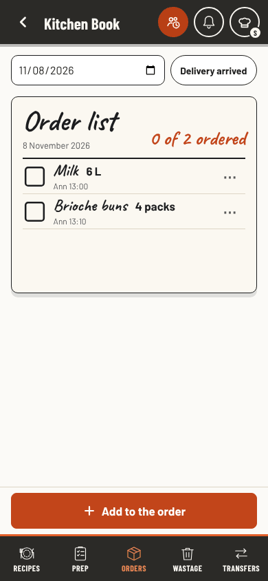
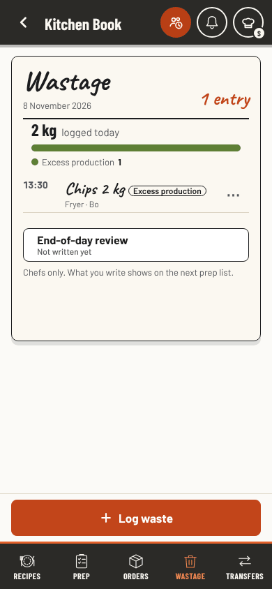
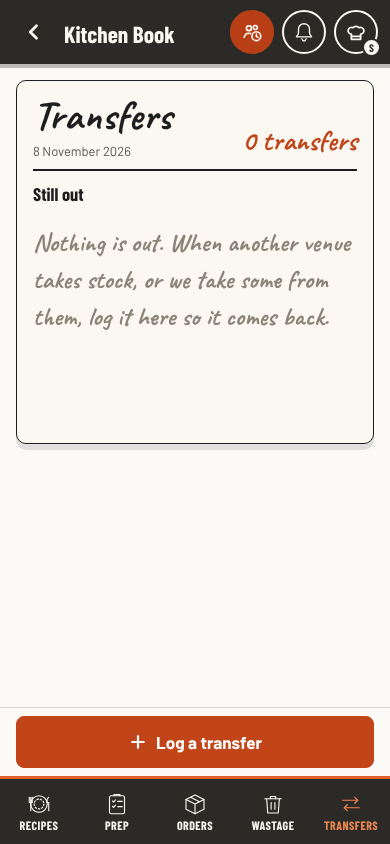
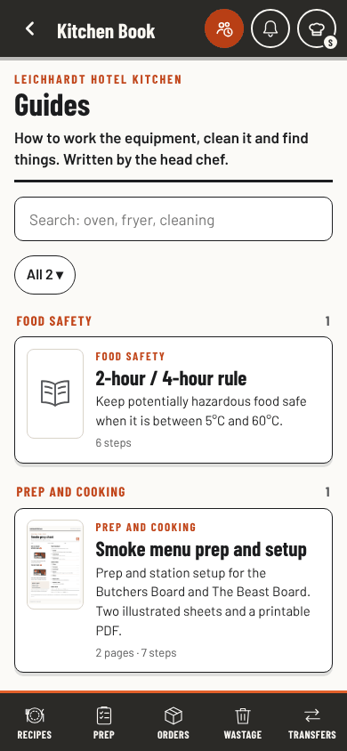
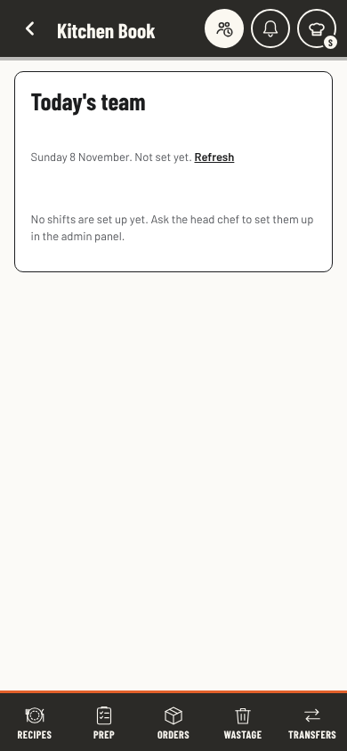
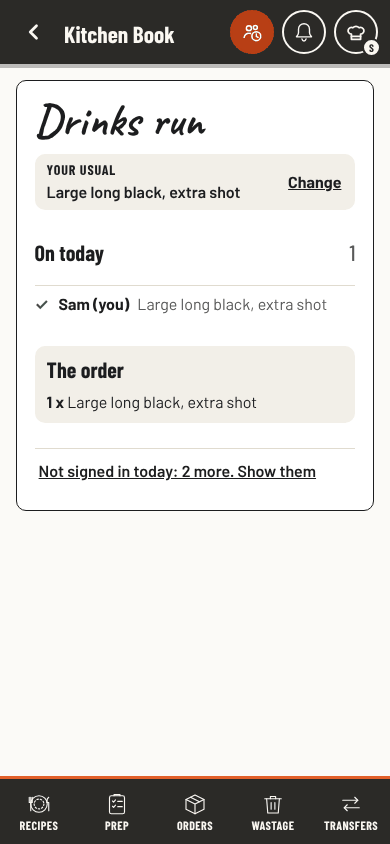
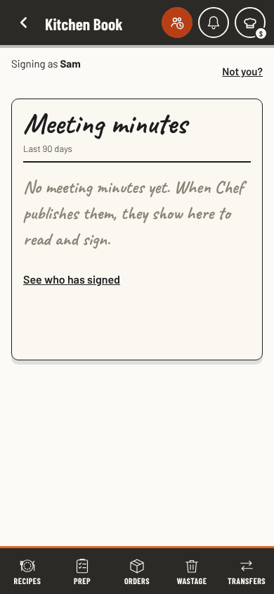
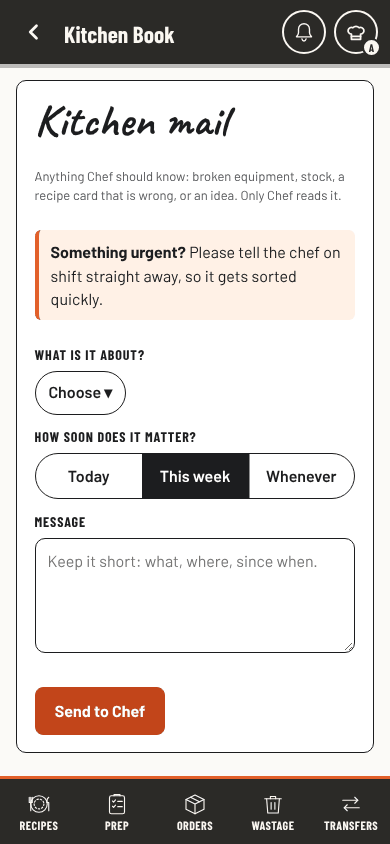
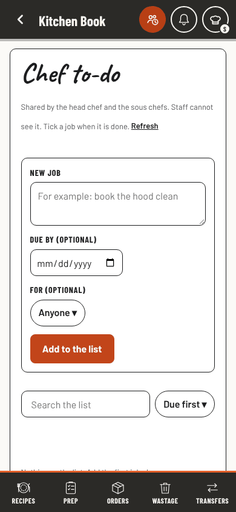
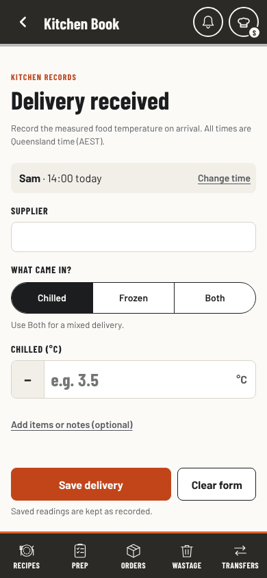
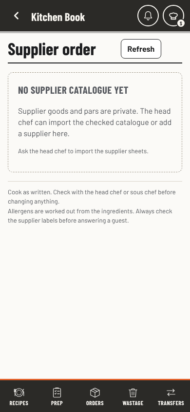
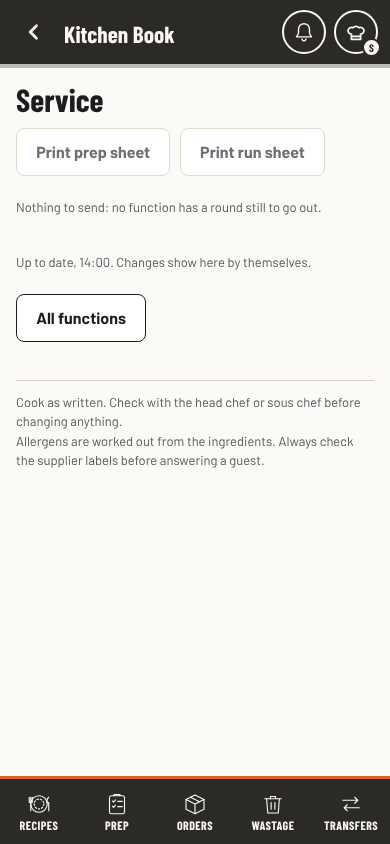
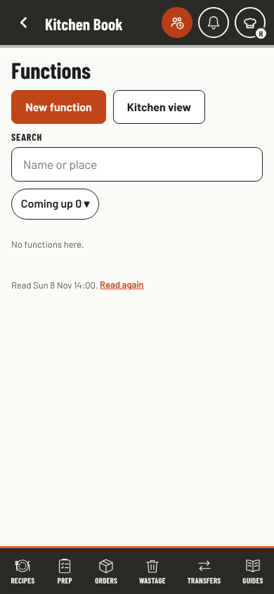
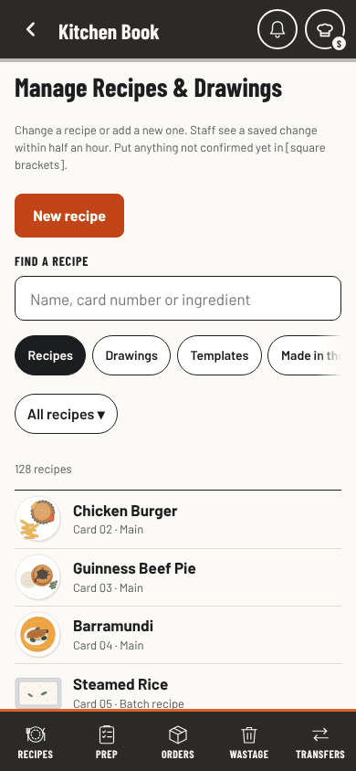
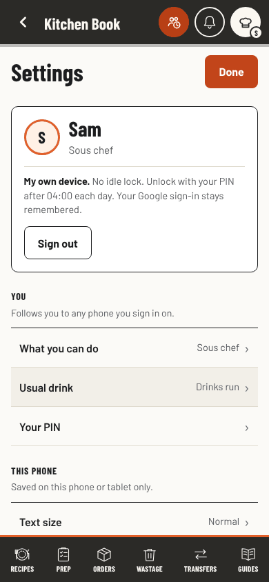
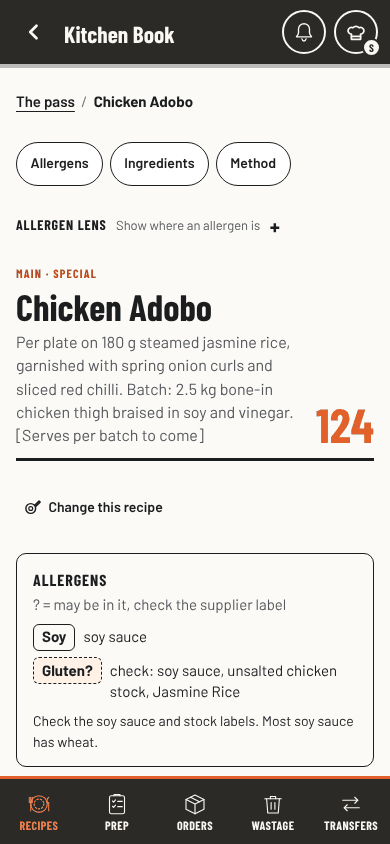
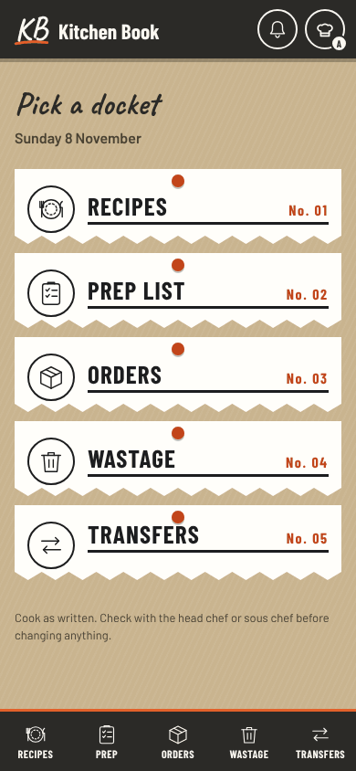
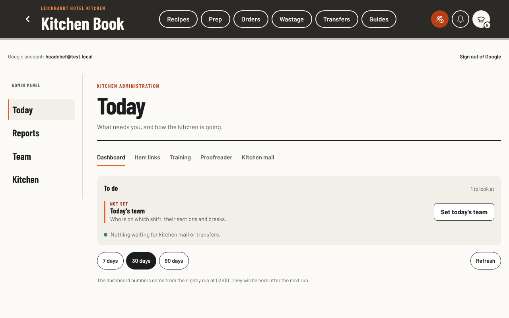
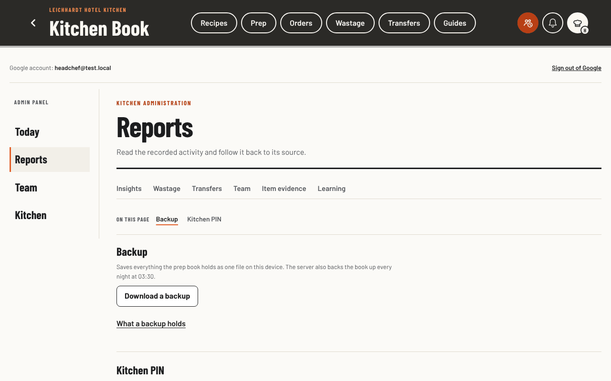
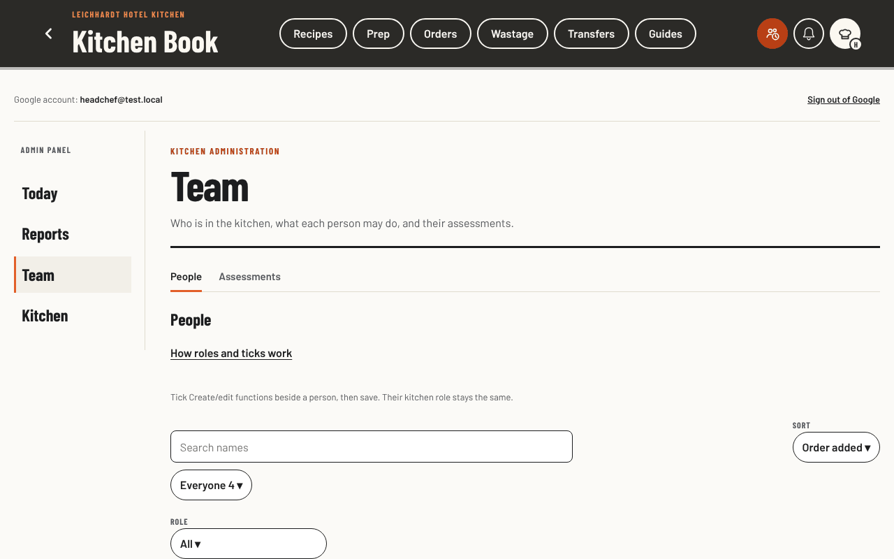
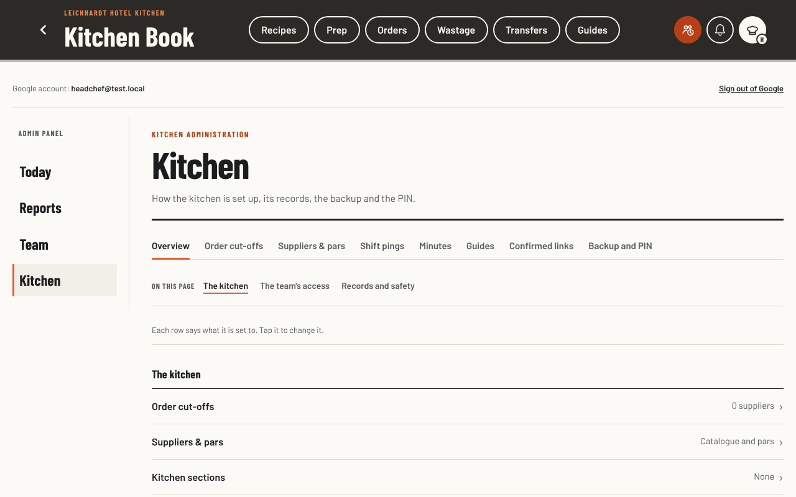
How this was made
Role-based analysis, not research with real staff. Five reviewers in round 1 and six in round 2 were fresh agents given the proposal and these screens. The today screenshots come from the click-test stand-in with the book's own stylesheet. The designs are drawn by hand in this page with the book's colours and type; nothing in them reads or saves. The full brief is docs/whole-app-redesign-options/brief.md.